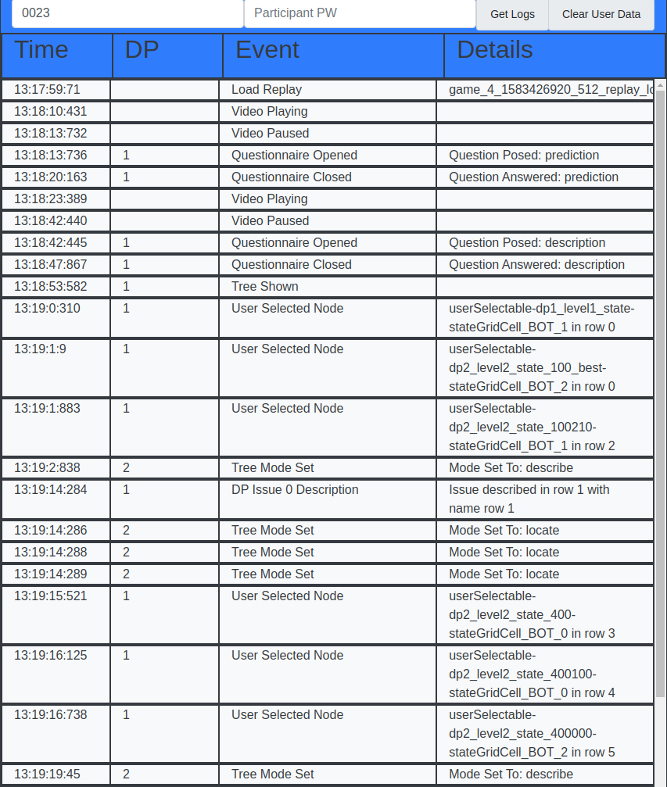

Current State

| Feature | Description | Progress | Example (if applicable) |
|---|---|---|---|
| Bug Detection Scripts | Python scripts search the decision tree at each decision | Complete | |
| Summarizing State and Action Information | Designed and developed various visualizations of the decision tree | Ongoing |
Current State
|
| Remote Study Dashboard | Designed and implemented an event logging and display dashboard to allow participant progress to be tracked by researchers | Complete |  |